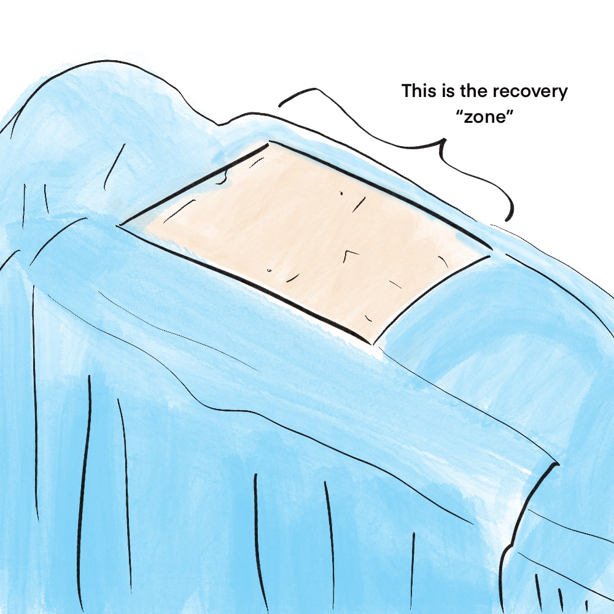
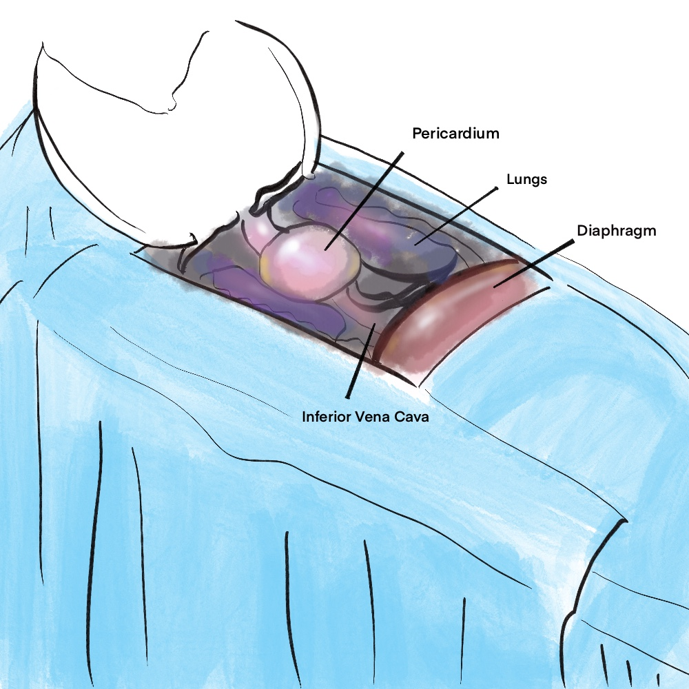
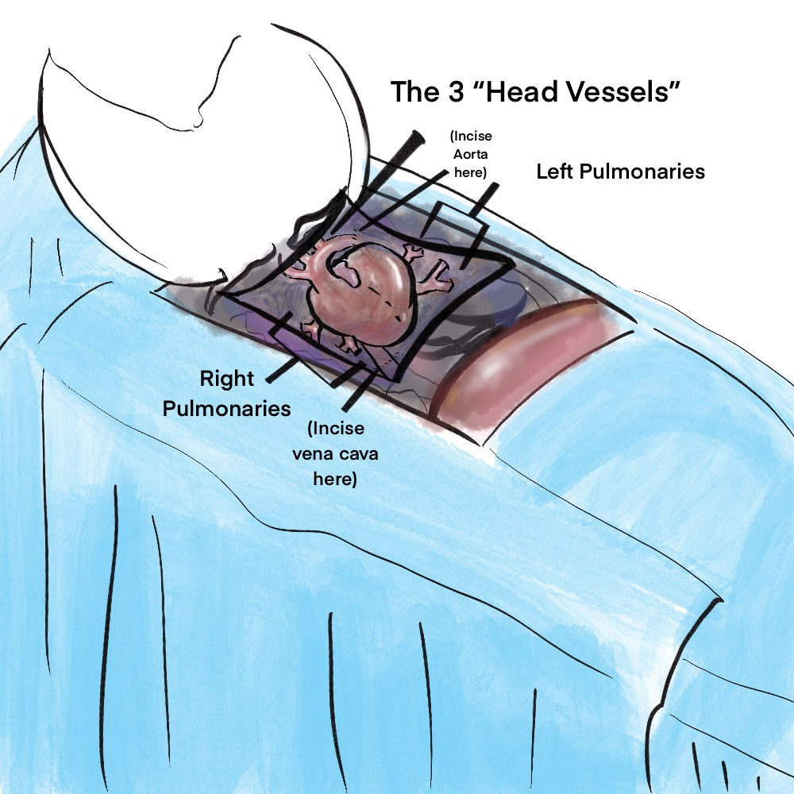

Illustrations:
|
Instructions: |
|  |
- Perform sterile prep and drape off the recovery zone.
- The are many ways to make the chest incision--this tutorial demonstrates a "U" incision.
|
|

|
- Make a "U" incision and remove the chest plate.
- Take two lap sponges and tuck them around the lung tissue to isolate it from the pericardial sack (lungs are crawling with bacteria because they have a direct interface with the outside air)
-
Use forceps to clamb off the inferior Vena Cave (we don't want fluid to flood the thoracic cavity)
-
Incise the pericardium to reveal the heart and head vessels.
|
|

|
- Use towel clamps to pull back and affix the four corners of the pericardium.
- The goal is to maximize the lengths of the head and pulmonary vessels.
The Three Head vessels are the:
- Subclavian Artery
- Brachial Artery
- Carotid Arterty
The Pulmonaries carry blood to and from the lungs. Each lung is fed by one artery and one vein (the only place in the body where veins carry oxygenated blood and the arteries carry the deoxygenated blood.)
Be sure to follow these vessels 1 cm beyond the point where they bifurcate and dive through the pericardial sack into the lungs:
-
Left and Right Pulmonary Arteries
- Left and Right Pulmonary Veins
-
|
add the text (materials and directions) and image content of your instructions.